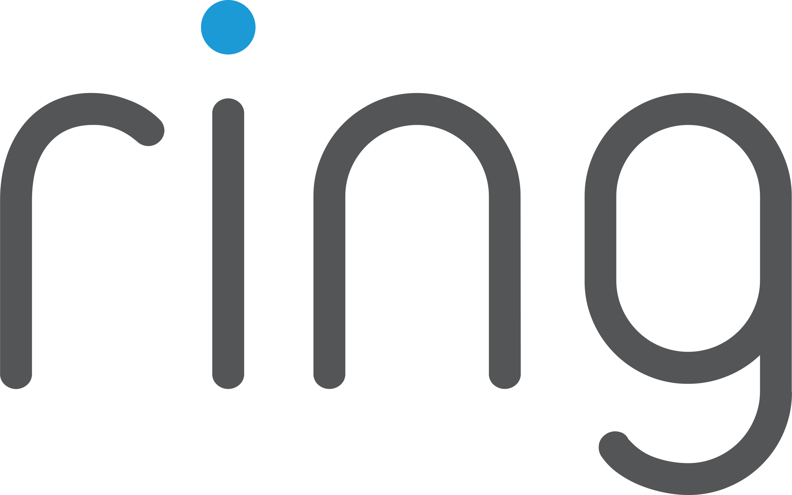
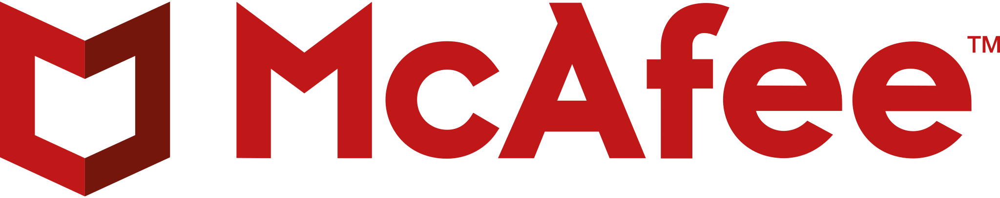

My passion is to solve problems, I'm always trying to find the best path to achieve a solution. No matter what
technology, I will be happy to learn new things if at the end of the day that helps.
I'm specialized on React, React Native and Angular, working on big projects, using server-side rendering
strategies and Node.js
for backend solutions.
Experience
Jul 2021 / Present
Senior Software Engineer on Mercado Libre Credits.

Aug 2020 / Mar 2021 - Contractor
Working at Ring.com as Software Engineer
Building the Always Home Cam app with React Native and GraphQL (Apollo Client).
- I developed a configuration screen on the app that allows users to use the beta release adapting the
environment for the desired requirements. It resets all the APIs configurations and initializes the app with
the selected environment.
- I Implemented a suite of testing (unit and e2e) from scratch. Using react-native-testing-library and
Appium.
- Built the Events History view, similar to the existing Ring app. In this case, taking into account the
drone events.
Jun 2019 / Jul 2020
Frontend Software Engineer on Mercado Libre Credits.
- Led a new initiative where we added new functionalities to a widget on the web app of Mercado
Credits, involving the deployment for three countries, and organizing the
work with content and business area.
- Ownership of new features. From design, implementation to production deployment.
- Analyze metrics and understand how features impacts on customers.
"It was a pleasure to work together with Juan. He is an experienced developer with a deep understanding of
Javascript and the latest frontend technologies, from whom I have learned a lot. Additionally, I highlight his
attitude of always being available to help his colleagues in solving problems. He is a great professional and an
excellent person."
- Lucas Madrazo, Senior Software Engineer, Mercado Libre.

Feb 2018 / Jun 2019
Worked as Frontend Software Engineer on McAfee MVISION EDR, responsible for designing and implementing
features.
- Take the lead to move to a new Angular 6 application, implementing a new metrics module for the project.
- Design and Development of unit test with Jasmine and integration test with Python.
- Scrum Master backup of a 9 member scrum team.
"Juan is a very enthusiastic developer. He is very responsible and do his best to complete
the assigned tasks.
He likes to research about new technologies/frameworks/libraries, and He learn very fast. He always tries to be
up to date with technology and that's very important for people who work with technology."
- Nicolás Javier Tolosa, Technical Leader, McAfee.
Aug 2017 / Jan 2018
Worked as Frontend Developer for multiple clients.
- Responsible for setting up the developer environment on a new project, designed the frontend architecture
and accomplished the whole functionality. Worked under pressure and delivered successfully a new application
on 4 months of work.
- Developed a NodeJs bot for Microsoft apps. Implemented authorization with Microsoft OneDrive on a week, as
part of a new feature.
 Apr 2016 / Jul 2017
Apr 2016 / Jul 2017
Worked for Deloitte’s account on multiple projects.
- Staffit: Implemented generic components on a new Angular2 solution, such as modals, buttons, tables, while
implementing new features.
Designed POC and future implementation for new trending loading style on the whole application.
- Rebrand: Participated in the process of repositioning the Deloitte’s brand. Worked in parallel with
business analysts to
determine the best impacts on the UX and with the guidelines of Deloitte.
"Entrepreneur, responsible. A great person who makes a great professional. In the time we
have worked together, he has always shown progress, interest and very focused on the result, taking care of
quality. At the same time, it has a very good self-management and autonomy, analyzing the emergency
factors not only of the development team but also of the objectives of the project.
A great young professional, with whom I would like to work together again."
- Mauricio Cisneros, Technical Leader, Globant.